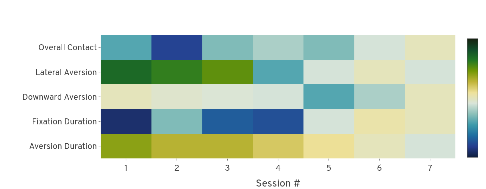
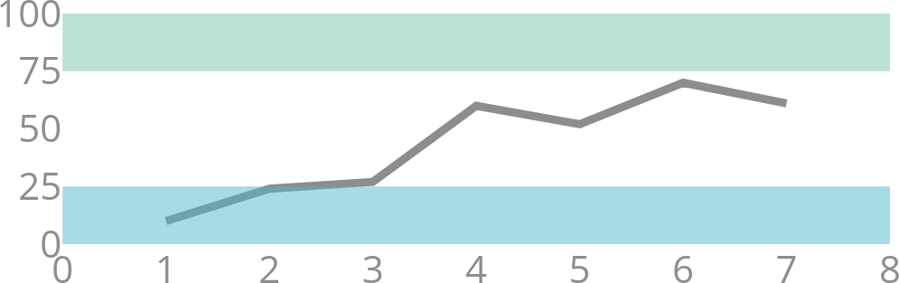
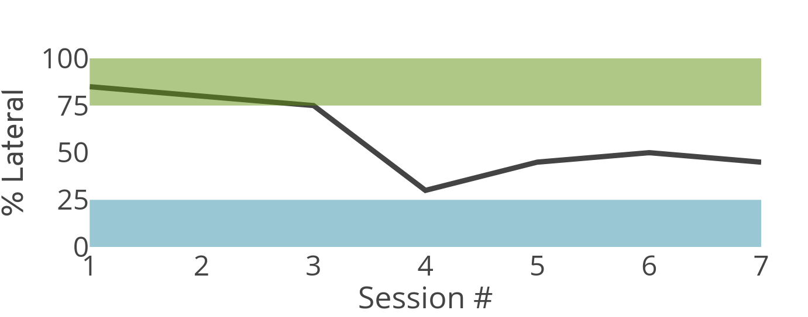
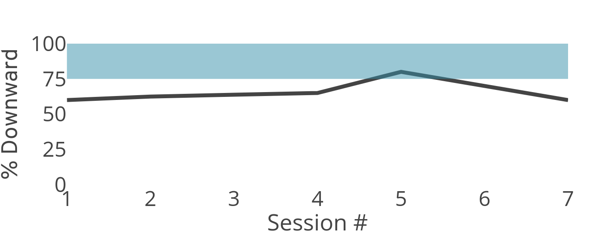
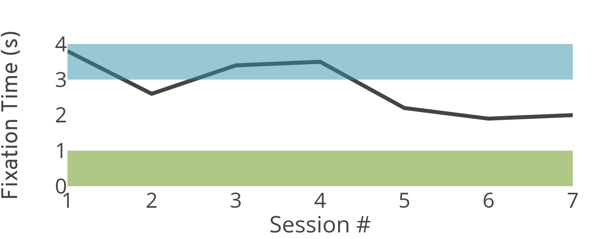
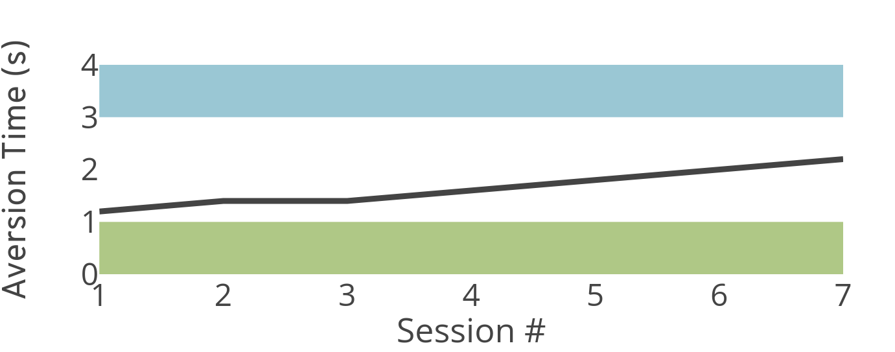

97.32%
80.04px
72.12%
GOOD
positive
andnegative
symptoms.Positive
symptoms are behaviors in excess or distortion of normal function, whereasnegative
symptoms are behaviors diminished or suppressed below normal function. Each symptom is given a score from 1 to 7, and the total under each syndrome scale is considered to be a participants score for that syndrome.Positive Symptoms
Negative Symptoms
positive
ornegative
syndromes, respectively.Positive Scale: 7-11
Negative Scale: 10-14





